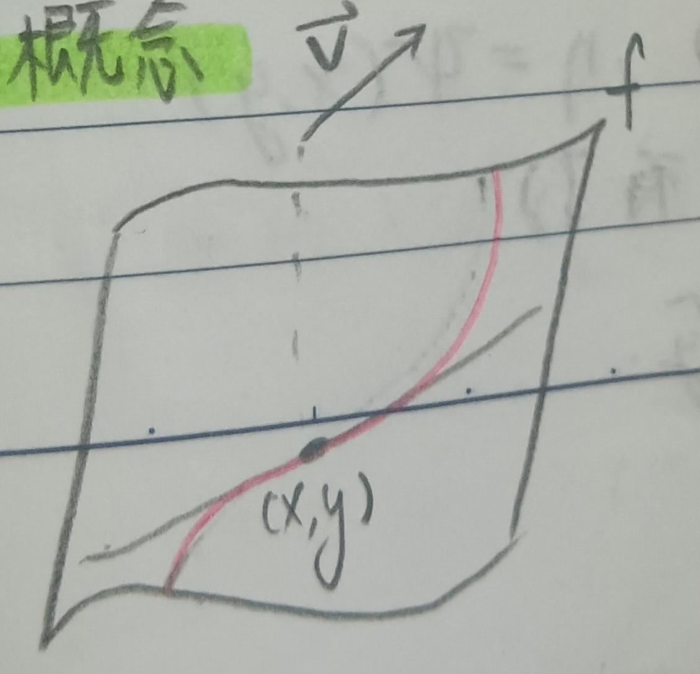

這份筆記是關於多變數函數的性質與微分。
n維空間
定義 1：n維空間距離 (Distance in n-dimensional Space)
考慮\(\mathbb{R}^n\)中的兩點\(x=(x_1,x_2,\cdots,x_n), y=(y_1,y_2,\cdots,y_n)\)。則定義兩點間的距離為 \[ |x-y|=\sqrt{(x_1-y_1)^2+(x_2-y_2)^2+\cdots+(x_n-y_n)^2} \]
定義 2：\(\mathbb{R}^n\)中的極限 (Limit in \(\mathbb{R}^n\))
對於一\(\mathbb{R}^n\)中的數列\(\{x_k\}^\infty_{k=1}\)，我們說\(\lim\limits_{k\to\infty}x_k=x\)，若\(\forall\epsilon>0\), \(\exists N\in\mathbb{N}\) s.t. \(\forall n>N\)有\(|x_n-x|<\epsilon\)。
定義 3：矩形 (Rectangle)
定義 3-1：開矩形 (Open Rectangle)
令\(a_1,a_2,\cdots,a_n\)和\(b_1,b_2,\cdots,b_n\)是給定的值，則定義\(\mathbb{R}^n\)中的開矩形為 \[ \{x=(x_1,x_2,\cdots,x_n)|a_i<x_i<b_i,\forall 1<i<n\} \]
定義 3-2：閉矩形 (Open Rectangle)
令\(a_1,a_2,\cdots,a_n\)和\(b_1,b_2,\cdots,b_n\)是給定的值，則定義\(\mathbb{R}^n\)中的開矩形為 \[ \{x=(x_1,x_2,\cdots,x_n)|a_i\leq x_i\leq b_i,\forall 1<i<n\} \]
多變數函數
定義 4：多變數函數 (Multivariable Function)
通常來說是指\(f:\mathbb{R}^n\to\mathbb{R}\)的函數。
定義 5：多變數函數的連續 (Continuous of Multivariable Function)
我們說\(f:\mathbb{R}^n\to\mathbb{R}\)在\(a\)連續，若\(\forall\epsilon>0\), \(\exists\delta>0\) s.t. \(|x-a|<\delta\)時，有\(|f(x)-f(a)|<\epsilon\)。
例 5-1
多變數函數的連續比單變數複雜許多。如考慮 \[
f(x,y)=\frac{2xy}{x^2+y^2}, f(0,0)=0
\] 若我們要說\(f\)在\((0,0)\)連續，則需要說「任何一條」趨近\((0,0)\)的路徑極限都是\(0\)。考量如下圖1的三條\(x'\to(0,0)\)的路徑：
1. \(x'=(0,y)\)，則\(f(x')\equiv 0\)。
2. \(x'=(x,0)\)，則\(f(x')\equiv 0\)。
3. \(x'=(x,x)\)，則\(f(x')\equiv 1\)。
於是可以發現\(f(x,y)\)在\((0,0)\)並不連續。
定義 6：多變數函數的一致連續 (Uniform Continuous of Multivariable Function)
給定\(f:\mathbb{R}^n\to\mathbb{R}\)，若\(\forall\epsilon>0\), \(\exists\delta>0\) s.t. \(|x-y|<\delta\)時，\(|f(x)-f(y)|<\epsilon\)，則說\(f\)一致連續。
偏微分
定義 7：偏微分 (Partial Derivative)
對於\(f:\mathbb{R}^n\to\mathbb{R}\)和\(x=(x_1,x_2,\cdots,x_n)\)。若極限 \[ \lim_{h\to 0}\frac{f(x_1+h,x_2,\cdots,x_n)-f(x_1,x_2,\cdots,x_n)}{h} \] 存在，則說在\(x\)上\(f\)對\(x_1\)的偏微分存在。
註記 7-1
上述偏微分大致能理解成\(f\)在\(x_1\)方向的斜率。
定義 7-2
\(f\)對\(x\)的偏微分有三種記法： \[ \frac{\partial f}{\partial x}, D_xf, f_x \]
註記 7-3
或者是說，\(f\)對\(x_1\)的偏微分可以理解為把\(x_2,x_3,\cdots,x_n\)視作常數，對\(x_1\)微分。
例 7-4
若\(f(x,y)=x^2+y^2\)，則 \[ \frac{\partial f}{\partial x}=2x, \frac{\partial f}{\partial y}=2y \]
例 7-5
若\(f(x,y)=xy\)，則 \[ \frac{\partial f}{\partial x}=y, \frac{\partial f}{\partial y}=x \]
定義 7-6
如是可以定義更高階的偏微分，通常記為： \[ \begin{aligned} \frac{\partial}{\partial x}\left(\frac{\partial f}{\partial x}\right)&=\frac{\partial^2f}{\partial x^2}\\ \frac{\partial}{\partial y}\left(\frac{\partial f}{\partial x}\right)&=\frac{\partial^2f}{\partial y\partial x}\\ \end{aligned} \] 等等。
註記 7-7
可以偏微分不代表會連續。
例 7-7-1
我們前面看過 \[ f(x,y)=\frac{2xy}{x^2+y^2}, f(0,0)=0 \] 在\((0,0)\)不連續，但 \[ \begin{aligned} \frac{\partial f}{\partial x}(0,0)&=\lim_{h\to 0}\frac{f(h,0)-f(0,0)}{h}\\ &=\lim_{h\to 0}\frac{0-0}{h}=0 \end{aligned} \] 同理\(\frac{\partial f}{\partial y}(0,0)=0\)。
定理 8
若\(f=f(x,y)\)在\((x_0,y_0)\)有偏微分且對於所有在\((x_0,y_0)\)附近的\((x,y)\)都有 \[
\begin{aligned}
\left|\frac{\partial f}{\partial x}(x,y)\right|&\leq M<\infty\\
\left|\frac{\partial f}{\partial y}(x,y)\right|&\leq M<\infty
\end{aligned}
\] 對於某個\(M\geq 0\)，則\(f\)在\((x_0,y_0)\)連續。(這裡以雙變數為例，多變數同理)
證明：固定\((x_0,y_0)\)。考慮\((x_0+h,y_0+k)\)，其中\(h,k\)很小。我們希望估計\(f(x_0+h,y_0+k)-f(x_0,y_0)\)。我們有 \[ \begin{aligned} |f(x_0+h,y_0+k)-f(x_0,y_0)|&=|f(x_0+h,y_0+k)-f(x_0+h,y)+f(x_0+h)-f(x_0,y_0)|\\ &=|kf_y(x_0+h,y_0+\theta_1k)+hf_x(x_0+\theta_2h,y_0)|\\ &\mbox{(微分均值定理)}\\ &\leq M(|h|+|k|) \end{aligned} \] 故知\(f\)在\((x_0,y_0)\)連續。QED
註記 8-1
有偏微分不一定連續，但有偏微分又有界就會連續。
註記 9
一般來說， \[ \frac{\partial^2 f}{\partial x\partial y}, \frac{\partial^2 f}{\partial y\partial x} \] 不一定會相等
例 9-1
考慮 \[ f(x,y)=\frac{xy(x^2-y^2)}{x^2+y^2}, f(0,0)=0 \] 可以發現 \[ \begin{aligned} \frac{\partial f}{\partial x}(0,y)=-y&, \frac{\partial f}{\partial x}(x,0)=x\\ \frac{\partial^2 f}{\partial y\partial x}(0,0)=-1&, \frac{\partial^2 f}{\partial x\partial y}(0,0)=1 \end{aligned} \] 兩者並不相等。
定理 9-2
若\(\frac{\partial^2 f}{\partial x\partial y}\)和\(\frac{\partial^2 f}{\partial y\partial x}\)在\((x_0,y_0)\)附近連續，則 \[ \frac{\partial^2 f}{\partial x\partial y}(x_0,y_0)=\frac{\partial^2 f}{\partial y\partial x}(x_0,y_0) \]
證明：考慮以下四個點：\((x+h,y+k)\), \((x+h,y)\), \((x,y+k)\), \((x,y)\)。令 \[ A=f(x+h,y+k)-f(x+h,y)-f(x,y+k)+f(x,y) \] 令\(\phi(x)=f(x,y+k)-f(x,y)\)，則 \[ \begin{aligned} A&=\phi(x+h)-\phi(x)\\ &=h\phi_x(x+\theta_1h)\\ &\mbox{(微分均值定理)}\\ &=h(f_x(x+\theta_1h,y+k)-f_x(x+\theta_1h,y))\\ &=hkf_{yx}(x+\theta_1h,y+\theta_2k)\\ &\mbox{(微分均值定理)} \end{aligned} \] 又令\(\psi(y)=f(x+h,y)-f(x,y)\)，則同上有 \[ A=\psi(y+k)-\psi(y)=khf_{xy}(x+\theta_1'h,y+\theta_2'k) \] 於是有 \[ f_{yx}(x+\theta_1h,y+\theta_2k)=f_{xy}(x+\theta_1'h,y+\theta_2'k) \] 當\(h,k\to 0\)時，由於\(f\)連續，故\(f_{yx}(x,y)=f_{xy}(x,y)\)。QED
導數
註記 10
在單變數微分中我們通常用的定義是 \[ g'(x_0)=\lim_{h\to 0}\frac{g(x_0+h)-g(x_0)}{h} \] 然而我們在這裡的定理10也看過 \[ g(x_0+h)-g(x_0)=Ah+\epsilon(h) \] 其中當\(h\to 0\)時\(\epsilon(h)\to 0\)。我們可以用此來定義多變數微分。
定義 11：多變數函數的導數 (Derivative of Multivariable Function)
我們說\(f:\mathbb{R}^n\to\mathbb{R}\)在\(x_0=(x_1^0,x_2^0,\cdots,x_n^0)\)可微，若存在向量\(\vec{A}\in\mathbb{R}^n\) s.t. \[ f(x_0+h)-f(x_0)=\vec{A}\cdot\vec{h}+\epsilon(\vec{h})|\vec{h}| \] 其中\(\vec{h}\)是\(\mathbb{R}^n\)中的小小向量(\(\vec{A}\cdot\vec{h}\)內積)且當\(|\vec{h}|\to 0\)時\(\epsilon(\vec{h})\to 0\)。
註記 11-1
給定函數\(f\)，則
1. 若\(f\)在\(x\)可微，則\(f\)在\(x\)連續。
2. 若\(f\)在\(x\)可微，則\(f\)各方向的偏微分都存在，且\(\frac{\partial f}{\partial x_i}=A\)的\(x_i\)分量(令\(h=(0,0,\cdots,0,h_i,0,\cdots,0)\)就好)。
定理 12
若\(f(x,y)\)在\((x_0,y_0)\)的偏微分連續，則\(f\)在\((x_0,y_0)\)可微。
證明：由微分均值定理，我們有 \[ \begin{aligned} f(x+h,y+k)-f(x,y)&=f(x+h,y+k)-f(x,y+k)+f(x,y+k)-f(x,y)\\ &=hf_xf(x+\theta_1h,y+k)+kf_y(x,y+\theta_2k) \end{aligned} \] 由於\(f_x\)和\(f_y\)在\((x,y)\)連續，故有 \[ f_x(x+\theta_1 h,y+k)=f_x(x,y)+\epsilon_1(h,k) \] 其中當\(h,k\to 0\)時\(\epsilon_1(h,k)\to 0\)。同理有 \[ f_y(x,y+\theta_2k)=f_x(x,y)+\epsilon_2(h,k) \] 則 \[ \begin{aligned} f(x+h,y+k)-f(x,y)&=hf_x(x,y)+kf_y(x,y)+\epsilon_1(h,k)h+\epsilon_2(h,k)k\\ &=hf_x(x,y)+kf_y(x,y)+\epsilon'(h,k)\sqrt{h^2+k^2} \end{aligned} \] 其中當\(h,k\to 0\)時\(\epsilon'(h,k)\to 0\)，故知\(f\)在\((x,y)\)可微。QED
註記 12-1
這個定理反過來不一定是成立的。
方向導數
定義 13：方向導數 (Directional Derivative)
給定\(f:\mathbb{R}^n\to\mathbb{R}\)和\(\vec{v}=(v_1,v_2,\cdots,v_n)\)。我們說\(f\)在\(\vec{v}\)的極限存在，若 \[ \lim_{h\to 0}\frac{f(x_0+h\vec{v}-f(x_0)}{h|\vec{v}|} \] 存在，記作\(\nabla_v f\)。
註記 13-1
若\(f\)可微，則 \[ \nabla_v f(x,y)=f_x(x,y)\cdot\frac{v_1}{|v|}+f_y(x,y)\cdot\frac{v_2}{|v|} \]
證明：我們有 \[ f(x+h,y+k)-f(x,y)=hf_x+kf_y+\epsilon(h,k)\sqrt{h^2+k^2} \] 令\(h=h'v_1\), \(k=h'v_2\)，則 \[ f(x+h,y+k)-f(x,y)=h'v_1f_x+h'v_2f_y+\epsilon\sqrt{h^2+k^2} \] 則 \[ \nabla_vf=\lim_{h'\to 0}\frac{h'v_1f_x+h'v_2f_y+\epsilon\sqrt{h^2+k^2}}{h'|v|}=f_x\frac{v_1}{|v|}+f_y\frac{v_2}{|v|} \] 因為\(\epsilon\sqrt{h^2+k^2}/h'|v|\to 0\)，所以忽略掉了。QED
定義 14
我們說\(f\in C^1\)，若\(f\)的一次偏微分連續。
我們說\(f\in C^m\)，若\(f\)的\(m\)次偏微分連續。
我們說\(f\in C^\infty\)，若\(f\)的任意次偏微分都連續。
註記 15：方向導數的幾何概念
\(f\)在\(\vec{v}\)方向的方向導數就是沿\(\vec{v}\)方向對\(f\)切一刀，會切出一條曲線(下圖2的紅線)，那方向導數就是該曲線在\((x,y)\)斜率。
定義 16：切平面 (Tangent Plane)
從註記15可以很合理的定義\(f\)在\((x,y)\)的切平面，即 \[
\phi(\xi,\eta)=f(x,y)=(\xi-x)f_x(x,y)+(\eta-y)f_y(x,y)
\] (這裡\(\xi,
\eta\)是變數，\(x,y\)是定值)。於是，在\((x,y)\)上所有方向的切線都落在\(\phi\)上。
(沿用前面的符號，讓 \[
\xi-x=\frac{v_1}{|v|}, \eta-y=\frac{v_2}{|v|}
\] 即可。)
註記 16-1
和單變數的狀況(這裡的定理10)一樣，切平面可以用來做一次估計。
註記 17
方向導數可以用切線來表示。若某方向和正\(x\)軸的夾角為\(\alpha\)，則方向導數 \[ \nabla_\alpha f=f_x\cos\alpha+f_y\sin\alpha \]
證明：我們可以用\((\xi,\eta)\)表示\(xy\)平面上的點，即 \[ \xi=x+\rho\cos\alpha,\eta=y+\rho\sin\alpha \] (i.e. \(\rho\)是\((x,y)\)到\((\xi,\eta)\)的距離)，則可以令 \[ \tau=f(\xi,\eta)=f(x+\rho\cos\alpha,y+\rho\sin\alpha) \] 則 \[ \nabla_\alpha f(x,y)=\left(\frac{d\tau}{d\rho}\right)_{\rho=0} \] 那麼在\((x,y)\)的很附近，有 \[ \begin{aligned} \tau&=f(x,y)+(\rho-0)\nabla_\alpha f\\ &=f(x,y)+\rho(f_x\cos\alpha+f_y\sin\alpha)\\ &=f(x,y)+(\xi-x)f_x+(\eta-y)f_y \end{aligned} \] QED
定義 18：增量 (Increment)
假設\(f(x,y)\)可微，則令\(u=f(x,y)\)，則\(u\)的增量定為 \[ \Delta u=f(x+h,y+k)-f(x,y) \]
定義 19：微分 (Differential)
很合理由定義18可以發現\(\Delta u\approx hf_x+kf_y\)(其實是\(\Delta u=hf_x+kf_y+\epsilon\sqrt{h^2+k^2}\))，將其記為\(df\)，即 \[ df=hf_x+kf_y \] 而又有 \[ \begin{aligned} d^2f=d(df)&=h(df)_x+k(df)_y\\ &=h(f_xh+f_yk)_x+k(f_xh+f_yk)_y\\ &=h^2\frac{\partial^2 f}{\partial x^2}+2hk\frac{\partial^2 f}{\partial x\partial y}+k^2\frac{\partial^2 f}{\partial y^2} \end{aligned} \] 於是也會有 \[ d^nf=h^n\frac{\partial^n f}{\partial x^n}+C^n_1h^{n-1}k\frac{\partial^n f}{\partial x^{n-1}\partial y}+C^n_2h^{n-2}k^2\frac{\partial^n f}{\partial x^{n-2}\partial y^2}+\cdots+k^n\frac{\partial^n f}{\partial y^n} \]
定義 20：梯度 (Gradient)
給定函數\(f(x_1,x_2,\cdots,x_n)\)，我們稱向量\(\langle f_{x_1}, f_{x_2},\cdots,f_{x_n}\rangle\)為\(f\)的梯度，記為\(\nabla f\)或\(\mbox{grad } f\)。
變數變換
單變數的時候給定\(f(x)\)和\(\phi(x)\)，則由鏈鎖律能很好的算出\((f(\phi(x)))'\)(見這裡的定理2)。
至於多變數的狀況，令\(u=f(\xi,\eta)\),
\(\xi=\phi(x,y)\), \(\eta=\psi(x,y)\)。我們在乎\(u_x\)和\(u_y\)(這樣什麼方向的導數都有了)。
定理 21
符號假設同上，有 \[ u_x=f_\xi\phi_x+f_\eta\psi_x, u_y=f_\xi\phi_y+f_\eta\psi_y \]
證明：考慮 \[ \begin{aligned} \Delta\xi&=\xi_x\Delta x+\xi_y\Delta y+\epsilon_1\sqrt{\Delta x^2+\Delta y^2}\\ \Delta\eta&=\eta_x\Delta x+\eta_y\Delta y+\epsilon_2\sqrt{\Delta x^2+\Delta y^2}\\ \Delta u&=f_\xi\Delta\xi+f_\eta\Delta\eta+\epsilon_3\sqrt{\Delta \xi^2+\Delta\eta^2} \end{aligned} \] 全部塞進去，有 \[ \Delta u=(f_\xi\xi_x+f_\eta\eta_x)\Delta x+(f_\xi\xi_y+f_\eta\eta_y)\Delta y+\epsilon\sqrt{\Delta x^2+\Delta y^2} \] 最後一項要整理一些可怕的東西，但反正結論是它夠小可忽略。令\(\Delta x,\Delta y\to 0\)，則 \[ u_x=f_\xi\phi_x+f_\eta\psi_x, u_y=f_\xi\phi_y+f_\eta\psi_y \] QED
例 21-1：極座標 (Polar Coordination)
考慮 \[ x=r\cos\theta, y=r\sin\theta \] 或 \[ r=\sqrt{x^2+y^2}, \theta=\arccos\frac{x}{\sqrt{x^2+y^2}} \] 給定 \[ u=f(x,y)=f(r\cos\theta,r\sin\theta)=F(r,\theta) \] 則 \[ \begin{aligned} F_x&=F_rr_x+F_\theta\theta_x\\ &=F_r\frac{x}{r}-F_\theta\frac{y}{r^2}\\ &=F_r\cos\theta-F_\theta\frac{\sin\theta}{r} \end{aligned} \] 同理有 \[ F_y=F_r\sin\theta+F_\theta\frac{\cos\theta}{r} \] 於是我們有 \[ F_x^2+F_y^2=F_r^2+\frac{1}{r^2}F_\theta^2 \] 再努力變形一下式子，有：
註記 21-1-1：拉普拉斯方程 (Laplace Equation)
即 \[ F_{xx}+F_{yy}=F_{rr}+\frac{1}{r^2}F_{\theta\theta}+\frac{1}{r}F_r \]

泰勒展開式
給定函數\(f\)及\(x,y,h,k\)，令\(F(t)=f(x+th,y+tk)-f(x,y)\), \(0\leq t\leq 1\)。則 \[ F'(t)=f_x(x+th,y+tk)h+f_y(x+th,y+tk)k \] (用上面的定理21就有了)，同理有 \[ F''(t)=f_{xx}h^2+2hkf_{xy}+f_{yy}k^2 \] 以及 \[ F^{(n)}(t)=h^nf_{x^n}+C^n_1h^{n-1}kf_{x^{n-1}y}+\cdots \] 又由微分均值定理知存在\(0<\theta<1\)使得\(F(t)-F(0)=F'(\theta t)t\)，則 \[ \frac{f(x+ht,y+kt)-f(x,y)}{t}=hf_x(x+\theta ht,y+\theta kt)+kf_y(x+\theta ht,y+\theta kt) \] 令\(t=1\)，則 \[ f(x+h,y+k)-f(x,y)=(x+\theta h,y+\theta k)+kf_y(x+\theta h,y+\theta k) \] 諸如此類，把\(F(t)\)給泰勒展開後再令\(t=1\)，就有：
註記 22：多變數泰勒級數 (Multivariable Taylor Expansion)
我們有 \[ f(x+h,y+k)=f(x,y)+df+\frac{1}{2!}d^2f+\frac{1}{3!}d^3f+\cdots+\frac{1}{n!}d^nf+R_n \] 其中剩餘項\(R_n\)可表為拉格朗日形式 \[ R_n=\frac{1}{(n+1)!}(h^{n+1}f_{x^{n+1}}(x+\theta h,y+\theta k)+\cdots+k^{n+1}f_{y^{n+1}}(x+\theta h,y+\theta k)) \] 其中\(0\leq\theta\leq 1\)。